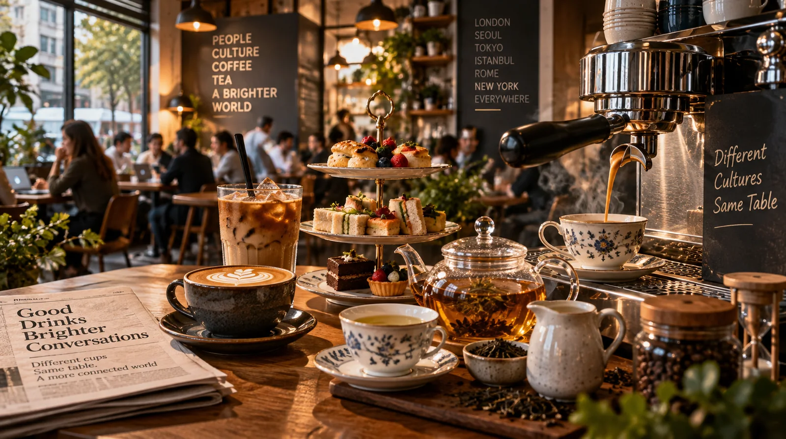
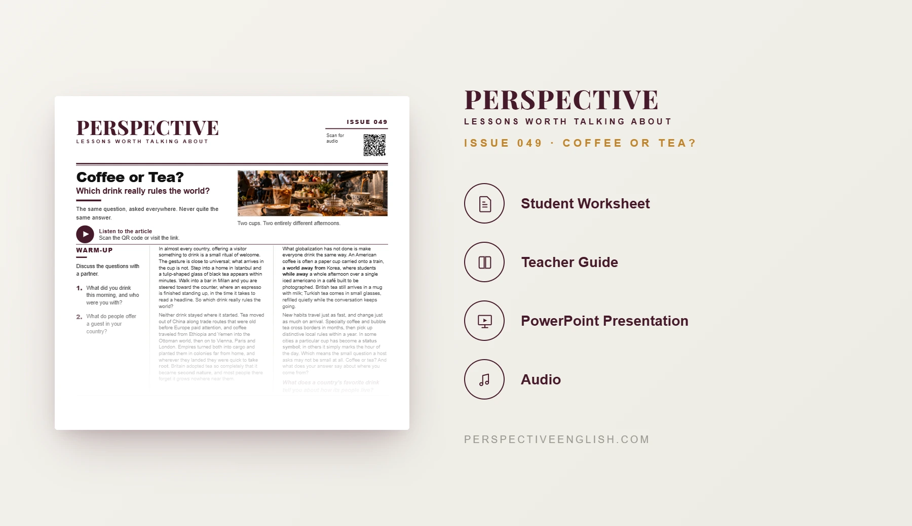

ISSUE 049
Coffee or Tea? ESL Lesson
Which drink really rules the world?
A ready-to-teach advanced C1–C2 ESL lesson exploring the traditions and globalization of coffee and tea, from Turkish tea glasses and Milan espresso bars to Korean study cafés and the future of local tea houses.
CHOOSE YOUR LEVEL
Collection 09 includes Issues 046–050.

LESSON PREVIEW

ABOUT THIS LESSON
About This Coffee and Tea ESL Lesson
What can an everyday drink tell us about culture? This advanced C1–C2 lesson explores how coffee and tea traveled around the world and acquired distinctive local traditions.
Students read and listen to an article comparing Turkish tea, Italian espresso, British tea, American takeaway coffee and Korean café culture. They discuss globalization, status symbols, local traditions and the different meanings of spending time over a drink.
In Open One Café, groups plan a twenty-seat café in a changing neighborhood, choosing customers, menu items and a strategy against a nearby chain. Students then role-play interviews about an 80-year-old tea house closing and write a 200–250 word opinion addressing the strongest opposing view.
FROM THE ARTICLE
WHAT'S INCLUDED
What's Included in This Coffee or Tea? ESL Lesson?
- Magazine-style C1–C2 advanced ESL student worksheet
- Original advanced reading and matching audio on coffee, tea, globalization and cultural traditions
- Five advanced expressions and five true-or-false comprehension questions
- Five discussion questions about drink habits, status symbols, traditional tea houses and globalization
- Open One Café critical-thinking activity: design a twenty-seat café, select four menu items and justify the customers you cannot serve
- Language in Context: second nature, take root, a world away from, a status symbol and while away
- Speaking challenge: interview the owner of a closing 80-year-old tea house, then switch to the young café owner opening next door
- 200–250 word opinion-writing task about what a country’s favorite drink reveals, addressing the strongest opposing view
- Teacher guide, complete answer key and model writing
- Ready-to-use classroom presentation
GET THE COMPLETE LESSON
Ready to Teach Coffee or Tea?
Get the complete C1–C2 Coffee or Tea? ESL lesson individually, or get Issues 046–050 together in Collection 09.
Secure checkout and instant digital delivery through Payhip.